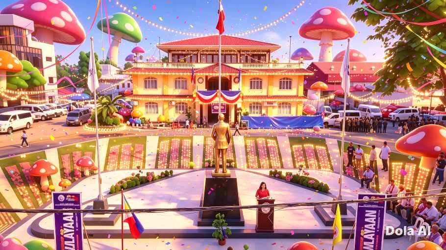
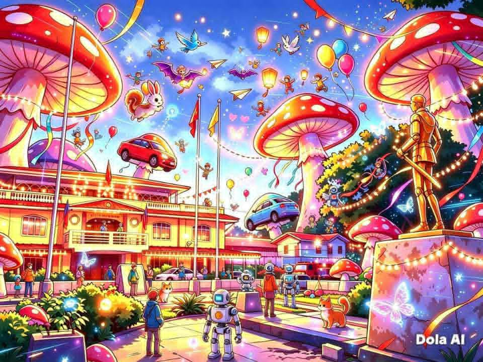

Technology
in
Municipality
Augmented Reality (AR)
It's realistic: government building, Philippine flag, municipal, normal street elements, and a few stylized giant mushrooms already added as a fun touch.
- Giant mushrooms become bigger, colorful, and magical.
- Added whimsical details: flying cars, balloons, fairies, robots, bright lights, confetti, and vibrant colors.
- The whole scene feels like a theme park or a dreamland, not just a government plaza.
Virtual Reality (VR)
- Classic yellow-and-white government building with Philippine flag on top.
- Open plaza with a monument of gma in the center.
- Already has large, colorful mushrooms structures added (a playful touch).
- Typical street elements: trees, parked cars, road, and small signs.
- Bright, festive daytime lighting, but still grounded and realistic.
It's the real-world-inspired base version of the municipal, before the Al added all the fantasy, magical details.
In the picture we use a place called municipal we added some kabute because gma known for kabute
